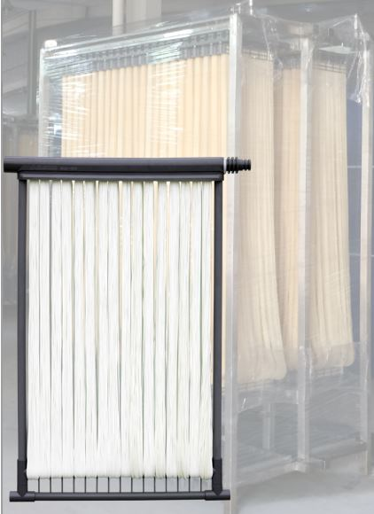

認識產品 ↗APPLICATIONS
再生水與水回用
先確認回用端的水質需求，再檢視既有流程。從生物處理與膜分離，到 RO 加壓及濃鹽水管理，依單元角色找到需要評估的產品或原廠方案。
生物處理段的膜配套
回用流程是否需要改善生物處理，或更新 MBR 膜組件？
回用流程的前段，需先對應原水的生物處理需求。MABR 提供膜供氧生物處理；MBR 膜組件負責生物污泥固液分離，後續過濾與消毒則依目標用水端配置。

MABR 是生物處理單元；回用水質仍需與後續固液分離、消毒及其他處理配置一起確認。
從您的現場條件開始討論
請提供原水來源、既有生物處理流程，以及預計供應的用水端。
放流水深度過濾
要在既有處理後增加 UF，或汰換回用前段的膜組件？
完成前段處理後，可依放流水條件評估 UF 深度過濾。指定膜系列負責懸浮顆粒與膠體截留；再依目標用水端的需求，確認後續處理與整體流程銜接。


從您的現場條件開始討論
請提供放流水水質、水量、目前流程及目標用水端的水質需求。
銜接回用 RO 前處理
若回用目標需要後續 RO，前端 UF 應如何配置？
回用流程若需以 RO 進一步處理溶解性成分，前端 UF 可評估作為顆粒截留單元。承信可協助討論代理 UF 膜的選型，並依放流水與下游要求確認適用條件。
從您的現場條件開始討論
請提供放流水資料、預計回用用途與後續 RO 的進水要求。
RO 加壓與能量回收
RO 需要進水加壓、段間增壓，或回收濃鹽水壓力能？
完成前處理後，RO 仍需合適的流量與壓力配置。FEDCO 高壓泵提供進水壓力，HPB 可回收壓力能並用於增壓；這些設備負責水力與能源配置，不執行過濾。


從您的現場條件開始討論
請提供 RO 進水分析、各段流量與壓力，以及新建或改造需求。
濃鹽水減量與後段銜接
RO 濃鹽水還要進一步回收水量，或銜接蒸發與結晶處理？
濃鹽水減量需先確認鹽分、結垢風險與後段去向。若評估高壓膜濃縮，HPB Ultra 可作為壓力能回收配套；膜系統、前處理與後段濃縮仍須整體評估。

FEDCO · 承信代理
壓力能回收HPB 能量回收渦輪增壓器
HPB Ultra：高壓膜濃縮的能量回收配套
限 HPB Ultra 版本評估；依濃鹽水成分、流量與壓力確認，不將一般 HPB 規格等同超高壓版本。
濃鹽水減量、鹽分回收與零液體排放為不同目標；本頁不宣稱承信供應完整蒸發結晶或零排放系統。
從您的現場條件開始討論
請提供濃鹽水分析、流量、現有 RO 回收率及後段處理目標。